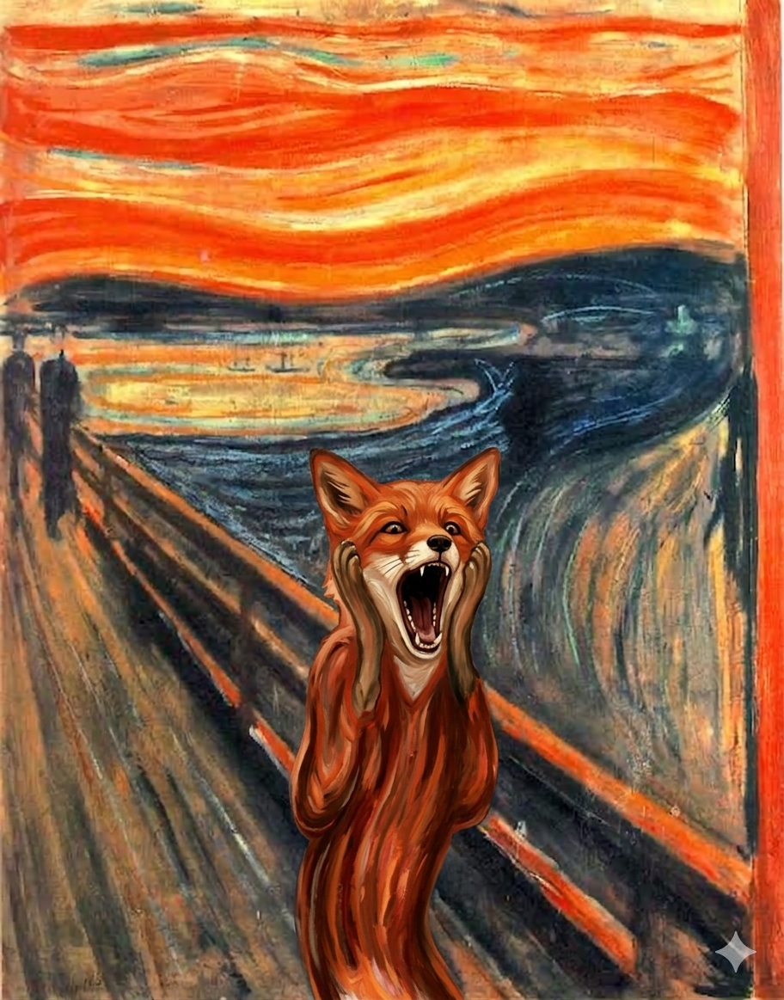

M

Le cri - Edvard Munch - 1893
Le cri symbolise l'homme moderne emporté par une crise d'angoisse existentielle

Le renard et le fromage
Bernabet le renard, crie de désespoir en se rendant compte que le ciel orange n'est pas du fromage
- Titre : Le cri
- Artiste : Edvard Munch
- Date : 1893
- Technique : Tempera et pastel
- Support : tempera sur carton
- Dimensions : 91 × 73,5 cm
- Lieu de conservation : Musée national de l'Art, de l'Architecture et du Design, Oslo